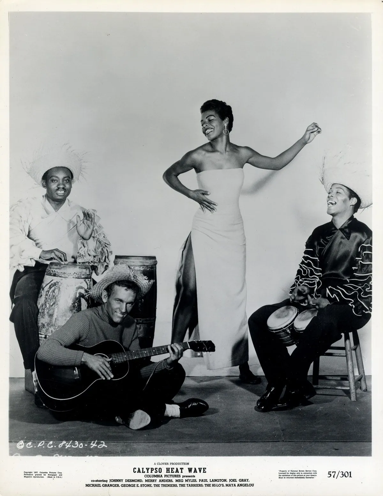
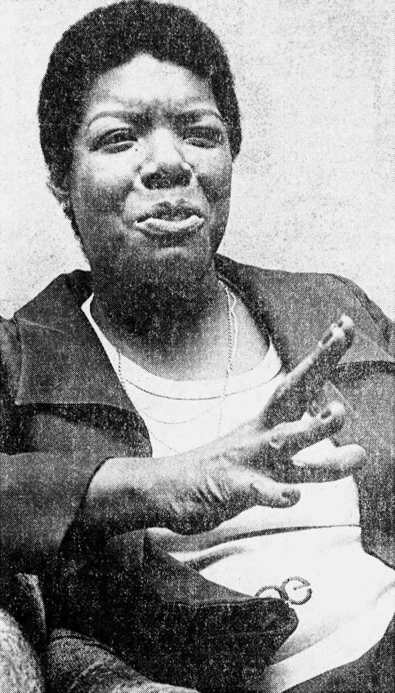

Marguerite Johnson was born in St. Louis in 1928 and raised mostly in Stamps, Arkansas, in the back of her grandmother's general store. At seven she was assaulted by her mother's boyfriend; when he was found dead soon after, she decided her voice had killed him and stopped speaking for close to five years. She spent them reading. A teacher, Bertha Flowers, coaxed her back into talking by insisting that poetry had to be said aloud to be understood, and the rest of her life was, famously, several lives: streetcar conductor, dancer, calypso singer, journalist in Cairo and Accra, organiser for Martin Luther King Jr., friend of Malcolm X and James Baldwin, and in 1993 the poet at the lectern on the Capitol steps.


The books came on a dare. Her editor, Robert Loomis, told her that nobody could write an autobiography as literature, and she took the bait. I Know Why the Caged Bird Sings came out in 1969 and treated one Black girl's childhood in the segregated South as a subject worth the full attention of a novelist. Six more volumes followed, and the poems came alongside, plainspoken and built for the mouth. Her sentences are easy to read, which she said was the hardest thing there is to write.
She could not write at home. Home was comfortable and full of things she liked, and all of it was a distraction. So in every town she lived in, she rented a hotel room by the month and asked the staff to take everything off the walls. She arrived at about six-thirty in the morning with a legal pad, a Bible, a thesaurus, a deck of cards and a bottle of sherry, lay across the bed on one elbow, and wrote longhand until early afternoon. The cards were for solitaire, which gave what she called the Little Mind something to do so the Big Mind could get on with the work. In the evening, at home, she read the morning's pages, typed them up and cut them hard. Twelve pages could become three, and she thought that was about right.
When the inauguration committee asked for a poem she did not change the method. She rented the room, took the pictures down, and wrote in the mornings until it was done. The most public thing she ever made came out of the most private routine she had. The point was never the room. The point was that nothing in it was hers, nothing in it asked anything of her, and the hour she chose was one nobody else wanted. A quiet place, and a habit of showing up to it.
Lift up your eyes upon
This day breaking for you. From "On the Pulse of Morning", 1993
Sources: Maya Angelou's interview in The Paris Review, no. 116 (1990); I Know Why the Caged Bird Sings (1969); Wouldn't Take Nothing for My Journey Now (1993). Cover photograph supplied; other photographs via Wikimedia Commons, credited in their captions. The poem excerpt is quoted briefly under fair use and remains the property of the Angelou estate.